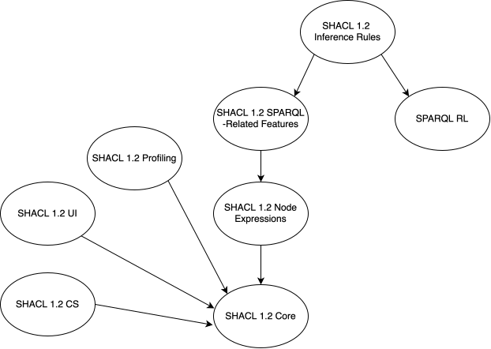

This document provides an overview of SHACL.
SHACL, the Shapes Constraint Language, is a language for describing the structure of RDF graphs. SHACL may be used for a variety of purposes such as validating, inferencing, modeling and building user interfaces.
This document provides a non-normative, high-level, overview of the various SHACL specifications and how SHACL has changed between its original and 1.2 releases. It also describes and lists some SHACL resources not found in the specification documents.
This documentation is published by the Data Shapes Working Group.
This specification is part of the SHACL 1.2 family of specifications.
The specifications are as follows:
Working Drafts:
Editor's Drafts:
The figure below shows the dependency of the various SHACL 1.2 specifications on one another.

The second iteration of the World Wide Web Consortium's Data Shapes Working Group aimed to "...update data shapes standards in line with the versions of core Semantic Web standards that cater for RDF-star and to extend the applications of data shapes with new packaging and use specifications". The outcome of the Working Group's operations was a set of specifications - W3C 'Recommendations' - that cover core SHACL elements, extended elements for advanced validation and SHACL functions beyond validation, such as rule evaluation, User Interface generation and the packaging of SHACL.
The original SHACL specifications as published in 2017 are:
Additionally, there is DASH - Data Shapes which is a members' extension to the above specifications including new types of validation result, extended SPARQL instructions and UI generation.
Section [[[#specifications]]] above lists the Data Shapes Working Group's original and current (1.2) specifications.
Section [[[#whatsnew]]] below describes the changes between SHACL, as published in 2017 and SHACL 1.2.
Section [[[#community-resources]]] below describes SHACL resources managed by W3C groups following on from the Data Shapes Working Group.
The appendixes below contain material supporting the set of SHACL specifications and provide SHACL users with additional support, such as validators for shapes graphs.
SHACL 1.2 covers new elements in RDF 1.2 and SPARQL 1.2, see [[[rdf12-new]]] and [[[sparql12-new]]]. It adds formal specification - Recommendations - for what previously were Working Group Notes or member publications and takes SHACL into new areas such as profile definition.
While SHACL 1.2 does aim to cater for all aspects of [[[rdf12-concepts]]] and [[[sparql12-query]]], those specifications are not finalized while this note remains here, so coverage may not yet be complete.
Following are the major new things in SHACL 1.2 and the specifications in which they appear.
| New Feature | Description | SHACL 1.2 Specification |
|---|---|---|
| Derived Properties | In the original SHACL specifications, shapes and constraints could only operate on asserted triples in a graph, and inferencing was left as an optional pre-processing step using languages like RDF Schema and OWL. SHACL 1.2 introduces its own inferencing and reasoning capabilities, which make SHACL more self-contained and cover different use cases than RDFS/OWL. | [[[shacl12-core]]] [[[shacl12-node-expr]]] |
| Flexible Target Nodes |
In SHACL 1.2, node expressions can be used in more places than derived properties, to which they were limited in the original SHACL specifications. Particularly, they can now also be used to compute the target nodes of a shape. This provides greater flexibility than the built-in target types such as sh:targetClass and sh:targetSubjectsOf.
|
[[[shacl12-node-expr]]] |
| Inference Rules |
The new [[[sparql12-rl]]] specification allows the representation and execution of Datalog-based rules using a SPARQL-like syntax. These have a straight-forward mapping to SPARQL This work was inspired by the SPARQL-based rules introduced by the [[[shacl-af-20170608]]] and older technologies such as SPIN. |
[[[sparql12-rl]]], [[[shacl12-inf-rules]]] |
| Better Syntax for Unions of Datatypes and Classes |
In the original SHACL specifications, when you wanted to express that the datatype of a property was either xsd:string, rdf:langString, or rdf:HTML, you needed to use a verbose, repetitive construct. In SHACL 1.2, this can be written as a single list.
|
[[[shacl12-core]]] |
| Constraints on RDF 1.2 Reification |
The major new feature in RDF 1.2 is reification, enabling RDF statements to be easily made about other RDF statements. SHACL 1.2 introduces new constraint properties (sh:reifierShape and sh:reificationRequired) which allow a shape targeting a triple to be chained to another shape targeting reification elements.
|
[[[shacl12-core]]] |
| Use of Reification in Constraint Definitions | In the original SHACL specifications, the severity and messages of a constraint had to be declared for the surrounding shape, sometimes requiring artificial intermediate shapes to be introduced to change only the severity or a message. SHACL 1.2 syntax is more flexible, allowing severity and messages to be directly attached to individual constraint triples. | [[[shacl12-core]]] |
The sh:ShapeClass Metaclass
|
A new class, sh:ShapeClass, comparable to owl:Class, is used to define classes that can declare constraints that apply to all instances of the class. It is equivalent to OWL syntax for declaring a class that may hold OWL axioms. This allows SHACL to be a more self-contained ontology modeling language.
|
[[[shacl12-core]]] |
| Cleaner Separation between Core and SPARQL | We now have a cleaner separation of Core and SPARQL concerns into separate specifications. This helps indicate SHACL Core is not dependent on SPARQL, clarify other dependencies, and make some implementations easier. | [[[shacl12-core]]], [[[shacl12-sparql]]] |
| A formal Compact Syntax |
The SHACL Community Group, which formed after the publication of the original SHACL specifications, produced an informal SHACL Compact Syntax Report which defines a compact syntax (sometimes referred to as SHACL-C) for core elements of the original SHACL specifications. We now have a formalization of that syntax with updates to aline with the other SHACL 1.2 specifications. |
[[[shacl12-cs]]] |
| A formal SHACL UI | Industry has used the original SHACL specifications for user interface generation since publication, with non-W3C extensions such as DASH. This is now formalized in a new specification. | [[[shacl12-ui]]] |
| Packaging of SHACL | SHACL elements have long been used in sets, typically OWL ontologies, and sometimes with additional semantic relations for management. [[[shacl12-profiling]]] now provides guidance on packaging of elements for validation and for reporting validation results. | [[[shacl12-profiling]]] |
| Profiles of SHACL |
Since 2017's SHACL and SHACL-AF, there were subsets of SHACL. In the SHACL 1.2 specifications, there are more. There is now a mechanism defined for profiling SHACL and a list of known profiles. There is also a set of 'SHACL-SHACL' validators - for each specification - rather than just one. |
[[[shacl12-profiling]]] |
| Profiling with SHACL |
SHACL has always been used to profile RDF graphs and make validators for specifications that do not supply them, such as older W3C vocabularies/ontologies. [[[shacl12-profiling]]] now indicates how to use SHACL to profile other things, within the conceptual model of [[[dx-prof-1.0]]]. |
[[[shacl12-profiling]]] |
| SHACL community resources | Since the original SHACL, the using community has created distributed resources. As of SHACL 1.2, the W3C has designated a central storage place for community-managed resources to assist with discovery and reuse. The SHACL Resources repository: https://github.com/w3c/shacl-resources. | All |
Since the initial publication of the original SHACL specifications, the SHACL user community has generated a lot of resources, some of which would benefit everyone by being shared for reuse.
A version control repository has been established by the W3C for shared SHACL resources:
Within the life of the SHACL Working Group responsible for this note, resources such as definitions of profiles of SHACL, SHACL-SHACL validators, see below, and more where added to this repository for maintenance beyond the life of the Working Group.
The SHACL community is encouraged to use that repository by improving the existing resources there, submitting new useful resources and by providing references to other interesting resources.
The Data Shapes Working Group maintains SHACL Shapes Graphs known as "SHACL-SHACL", which are used to validate other SHACL Shapes Graphs. Multiple graphs exist to enable the validation of subsets of the complete body of SHACL elements. The subsets are based on the scopes of the various SHACL specifications.
Each SHACL-SHACL Shapes Graph corresponds to the scope of an individual SHACL specification and is available as an RDF resource:
There is no shapes graph for SHACL Compact Syntax since the specification defines an RDF syntax specialised for describing SHACL concepts and does not introduce any new concepts itself.
In addition, the union of the above shapes graphs is provided:
The SHACL-SHACL Shapes Graphs listed above can be retrieved from their namespace IRIs and are also available as described in Section [[[#community-resources]]].
The Data Shapes Working Group maintains a SHACL graph known as "SHACL-OWL", which is used to cast SHACL concepts as OWL classes and properties, conformant to typing constraints of OWL 2 DL. This graph enables OWL 2 DL validation for ontologies that use SHACL and OWL modeling concepts together within ontology graphs.
SHACL concepts appear undefined from the perspective of an OWL syntax validator, unless OWL type assertions have been inlined somehow in the OWL validator's inputs. Definitions for SHACL rdfs:Classes are straightforward, but property types face potential decision points. Typing constraints of OWL 2 DL require that exactly one of owl:ObjectProperty, owl:DatatypeProperty, or owl:AnnotationProperty be the type of any property used in an OWL ontology but SHACL does not specify typing like this. SHACL-OWL provides these types, designating most SHACL properties as owl:AnnotationProperty unless a reason was found by the Data Shapes Working Group to use another type.
SHACL-OWL is available as an RDF resource:
The SHACL-OWL Shapes Graph listed above can be retrieved from its namespace IRIs and also as described in Section [[[#community-resources]]].
The SHACL-SHACL Shapes graphs do not import or modify the data they evaluate, ensuring that they do not impact an organization's information when applied to it. They only report on the data's validity according to the vocabulary-subset of SHACL corresponding to the utilized Shapes graph and any imports of other SHACL-SHACL Shapes graphs (e.g., all SHACL-SHACL shapes graphs will import SHACL-SHACL Core). Additionally, they do not automatically export results anywhere beyond a SHACL processor's standard output channel.
For these reasons, this content is expected to present minimal security and privacy concerns.
Many people contributed to this document, including members of the RDF Data Shapes Working Group.